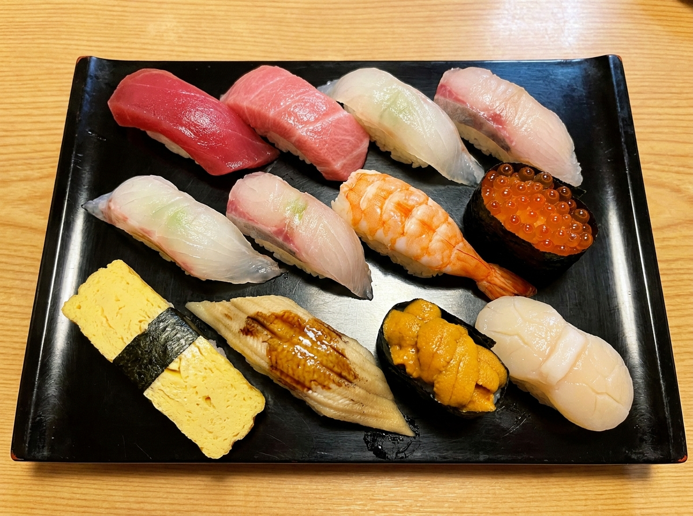
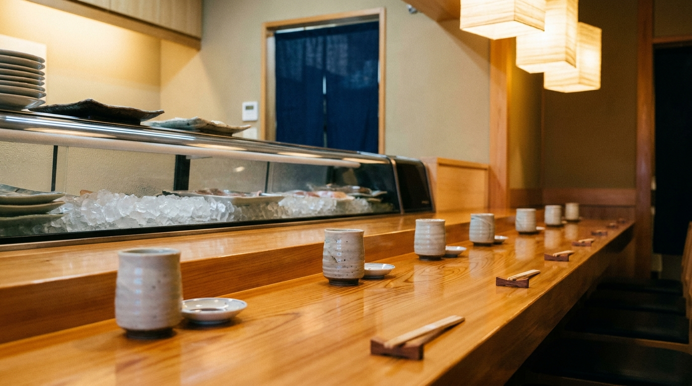

にぎり
その日のネタを、一貫ずつ。酢飯とシャリが評判の、看板のお寿司です。
SUSHI — KAMIFUKUOKA
酢飯とネタが評判の、昔ながらの町の寿司屋。
上福岡の、大将と女将さんのお店です。
水曜定休 ／ 営業時間はお電話でご確認ください
※画像はイメージです
ABOUT
上福岡駅の東口から歩いて2分ほど。檜のカウンターとテーブル席の、昔ながらの町の寿司屋です。大将と女将さんが迎えてくれる、ひとりでも入りやすいお店。
「酢飯、シャリが最高」「ネタがとにかく美味しい」——リーズナブルな価格で、確かな一貫を。クチコミでも、そんな声の集まる、地元で愛されるお店です。

一人でも、さっくりと一献。
※画像はイメージです
SHOP INFO
| 店名 | 寿司長 |
|---|---|
| 住所 | 埼玉県ふじみ野市上福岡1-14-49 |
| アクセス | 上福岡駅 東口 徒歩約2分 |
| 営業時間 | 詳しくはお電話でご確認ください |
| 定休日 | 水曜 |
| ご利用 | 店内・お持ち帰り・ご宅配 |
| 電話 | 049-261-2040 |